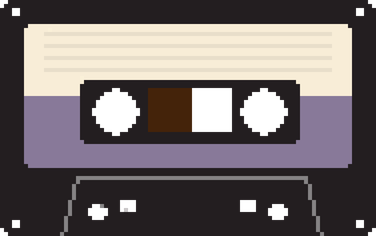
DiktafonVoice memos on cassette tapes — transcribed and summarized entirely on your device.
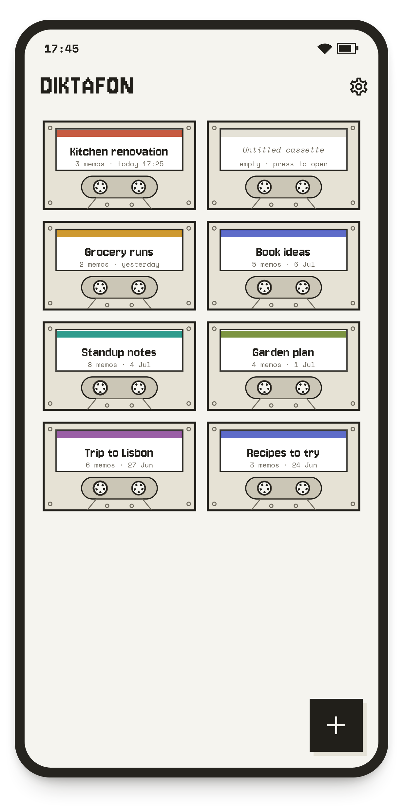
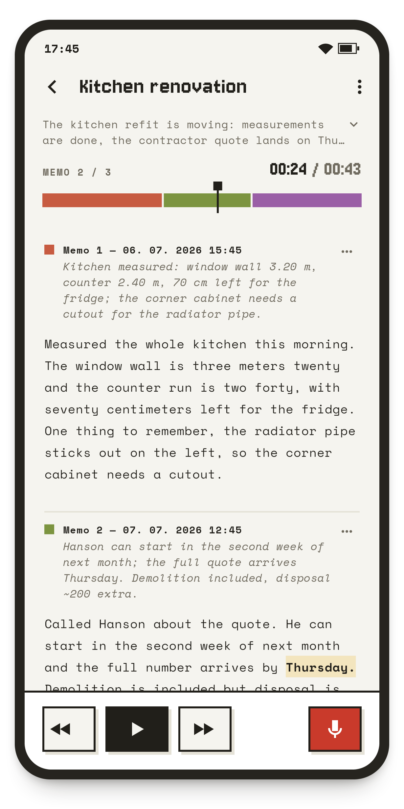
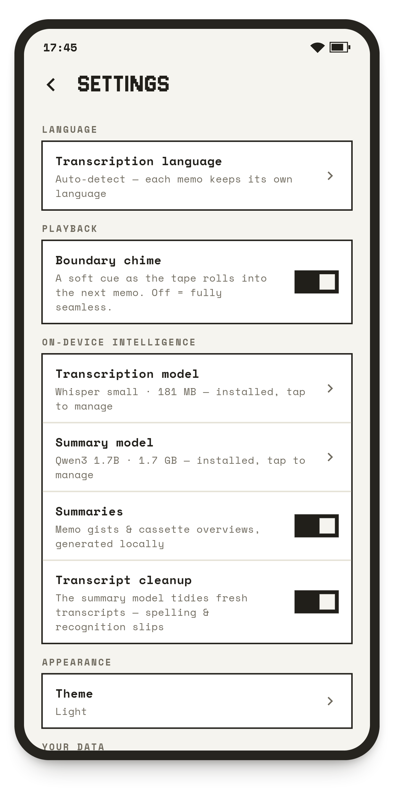
Diktafon is a voice-memo app built around one idea: capturing a thought and finding it again later must feel effortless. The feel is nostalgic — inspired by the tape devices of the past, memos live on topic-based cassettes, and each cassette plays as one continuous tape of chronologically ordered recordings.
📼 Simple to useControls you already know, inspired by real tape recorders. Keep each topic on its own cassette — press record, talk, and rewind to find it again. |
🚀 ModernAutomatic transcriptions and summaries — every memo transcribed, every cassette summarized and titled. |
🔒 Completely privateTranscription and summaries are computed on your device. No accounts, no cloud, no analytics — nothing ever leaves it. |
🌍 Built for youSpeaks your language — in recordings, summaries, and the app itself. |
⓪ Free & open-sourceNo cost, no ads, no lock-in. MIT-licensed — read the code, build it yourself, make it yours. |
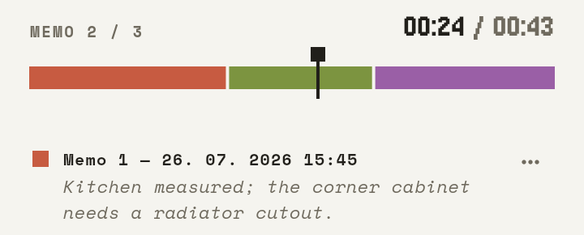
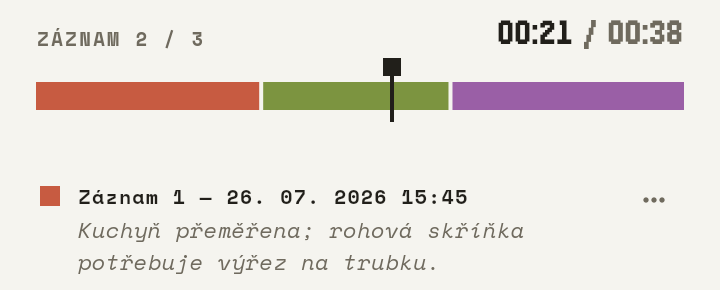
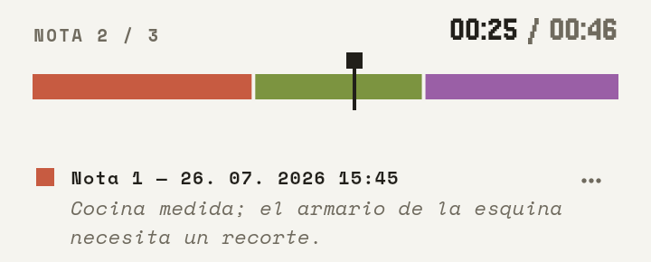
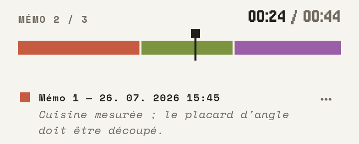
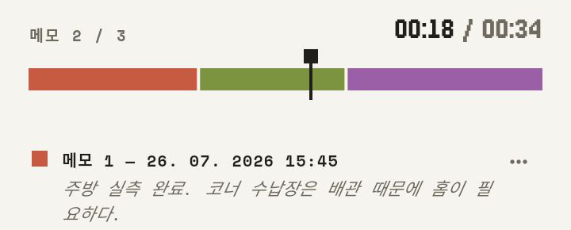
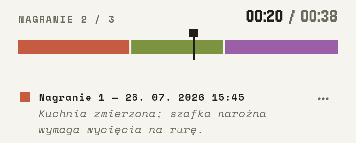
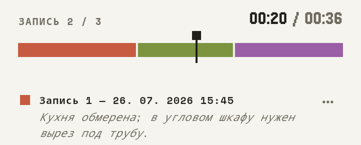
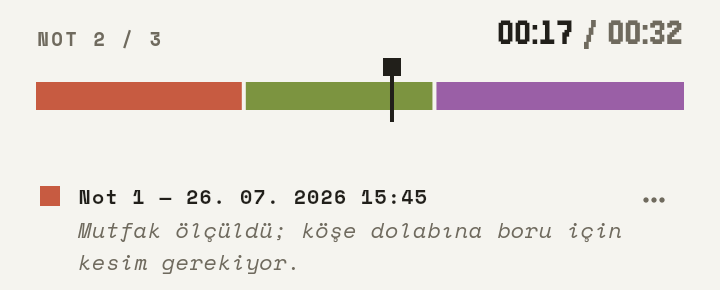
English · Čeština · Deutsch · Español · Français · 한국어 · Polski · Português · Русский · Türkçe
Prebuilt artifacts for every release are on the releases page.
Download diktafon-<version>-android-arm64-v8a.apk
(64-bit phones; the x86_64 APK is for emulators) and
install it — you may need to allow “install unknown apps” for your
browser or file manager. Requires Android 7.0 (API 24) or newer; 4 GB
RAM recommended for the default models.
Alternatively, install from a computer with adb (USB debugging enabled on the device):
adb install diktafon-<version>-android-arm64-v8a.apktar xzf diktafon-<version>-linux-x64.tar.gz
# Runtime dependencies: playback (libmpv), recording (parecord + ffmpeg)
sudo apt install libmpv2 pulseaudio-utils ffmpeg
./diktafon-<version>-linux-x64/diktafonBuilt on Ubuntu 24.04 (glibc 2.39); older distributions should build from source instead.
Each release ships a SHA256SUMS file, and all artifacts
carry a GitHub build-provenance
attestation proving they were built by this repository’s release
workflow:
sha256sum -c SHA256SUMS --ignore-missing
gh attestation verify diktafon-<version>-android-arm64-v8a.apk --repo jaromiru/diktafonPrerequisites:
native/ and built automatically by the Flutter build (CMake
/ externalNativeBuild).git clone https://github.com/jaromiru/diktafon.git
cd diktafon
flutter pub get
flutter run -d linux # desktop dev run
flutter build linux --release # → build/linux/x64/release/bundle/
flutter build apk --release --split-per-abi \
--target-platform android-arm64,android-x64 # → build/app/outputs/flutter-apk/
# Install on a connected Android device (-r replaces an existing install):
adb install -r build/app/outputs/flutter-apk/app-arm64-v8a-release.apkRelease APKs are signed with the debug key unless you provide
android/key.properties (see the Flutter
signing docs; the file and keystores are gitignored).
flutter analyze && flutter test # static analysis + unit/widget tests
flutter test integration_test -d linux # end-to-end flows on the desktop buildThe integration tests cover record → play → transcribe → summarize flows. The transcription and summarization steps run the real engines only when pointed at locally downloaded models, and skip cleanly otherwise:
export DIKTAFON_WHISPER_MODEL=/path/to/ggml-tiny-q5_1.bin # huggingface.co/ggerganov/whisper.cpp
export DIKTAFON_LLM_MODEL=/path/to/Qwen3-0.6B-Q8_0.gguf # huggingface.co/Qwen/Qwen3-0.6B-GGUF
flutter test integration_test -d linuxDesigned by Jaromír Janisch, implemented by Claude Code.
Licensed under MIT — see LICENCE.md for details, including the
licences of the vendored engines, bundled fonts, and the
runtime-downloaded models. The software is provided “as is”, without
warranty of any kind.